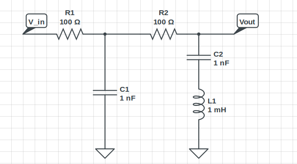
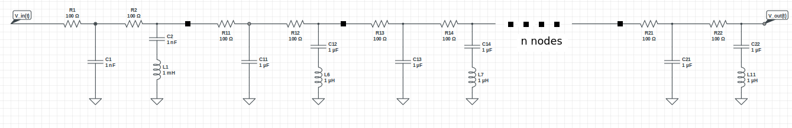

Electrical circuits are often constructed in the form of concatenation of ladders. One such has been provided to you. Find the open circuit output voltage at a time $t = 3$ seconds if the input signal is given as $V_i(t) = sin(100\pi t)$. The ladder is shown below.
Mail the answer to simplicity.tronix15@gmail.com.
The following is the ladder circuit given. It contains one node.
The following circuit contains $n$ nodes. Find the open circuit voltage output at time $t = 3s$ for an input $V_i(t) = cos(100\pi t)$ and $n = 20$. 